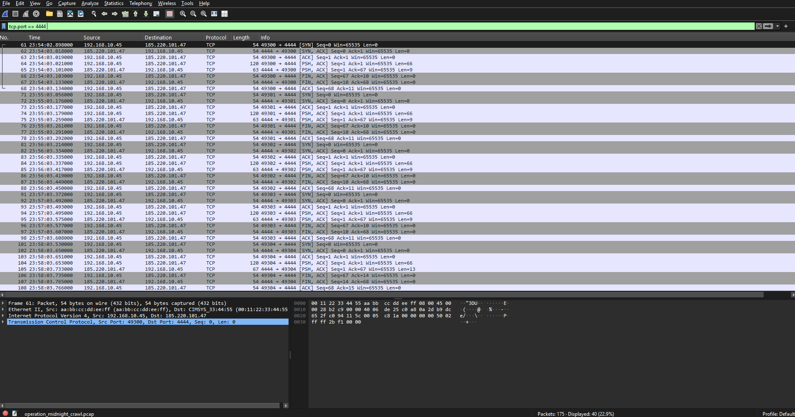

Dashboards and tickets tell you that something happened. This case was about learning to see how it happened — at the packet level, where nothing is summarized or pre-interpreted.
The goal was to get comfortable capturing traffic, isolating the conversations that matter with display filters, and reconstructing full sessions from raw frames — the same muscle used to confirm or rule out a suspected compromise.
| Component | Detail |
|---|---|
| Capture Tool | Wireshark |
| Capture Type | Live interface capture + saved .pcap review |
| Filter Focus | tcp.stream, http, dns, ip.addr |
| Comparison Method | Baseline "normal" traffic vs. anomalous capture |
Capture & Orient
Captured live traffic and reviewed the protocol hierarchy before drilling into individual frames, to understand the overall mix first.
Apply Display Filters
Used targeted filters to isolate specific conversations and patterns worth a closer look — unusual ports, repeated connection attempts, plaintext credentials.
Follow TCP Streams
Reconstructed full sessions end-to-end using "Follow TCP Stream" to see exactly what was exchanged, not just that a connection existed.
Baseline vs. Anomaly
Compared a capture of normal traffic against a capture with injected anomalies, to build a feel for what actually stands out.
Isolate a Specific Conversation
Narrows the capture down to one TCP stream so the full back-and-forth can be read in order.
Flag Suspicious HTTP Activity
Surfaces plaintext HTTP requests worth reviewing for credentials or unusual destinations.
tcp.stream gave far more context than scanning frames one at a time.
The steepest part of the learning curve was resisting the urge to filter too aggressively too early — narrowing down before understanding the overall traffic mix meant I sometimes missed context that mattered.
This case made packet capture feel less like a black box. Once I could reliably isolate a conversation and follow it end-to-end, network traffic stopped being noise and started being a readable story.